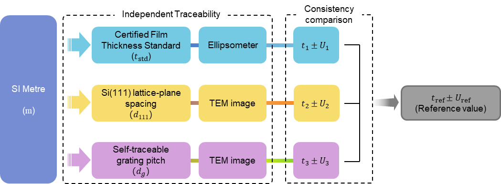
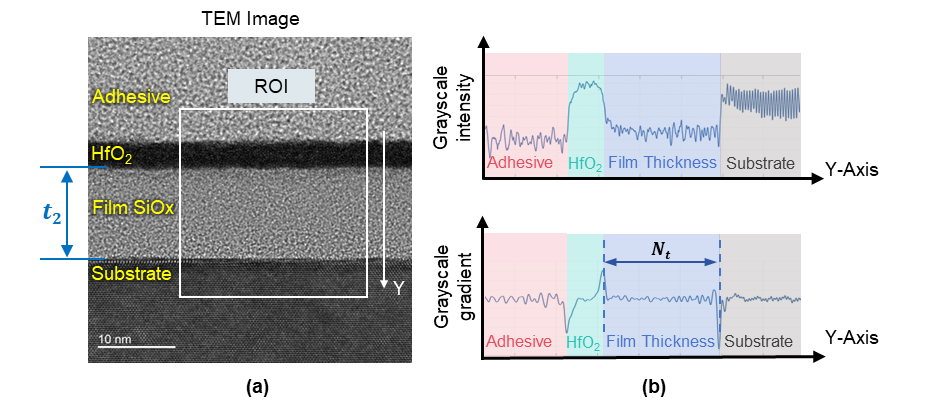
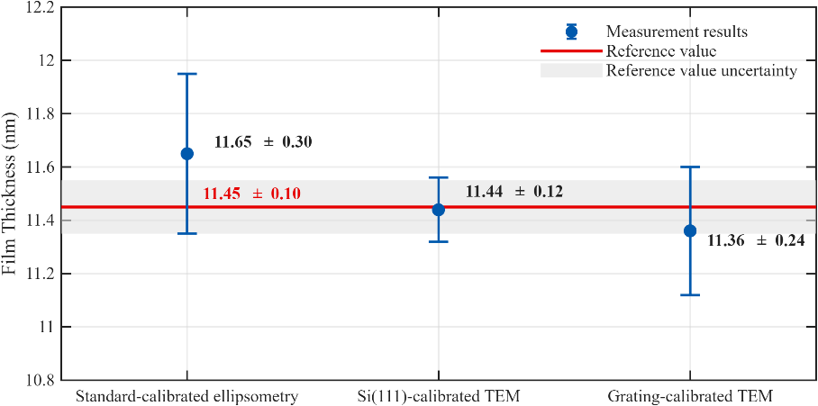
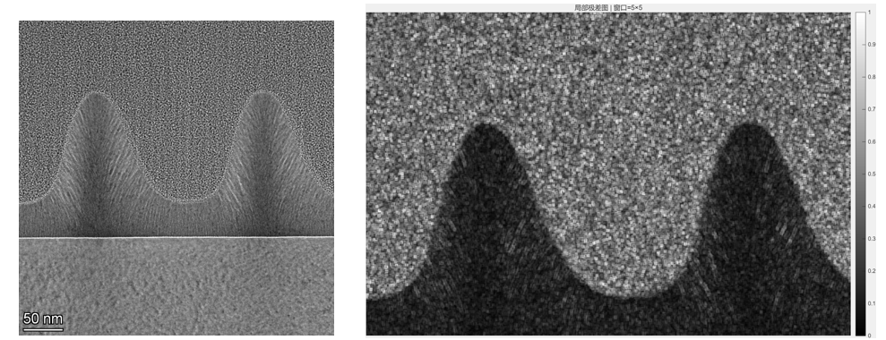
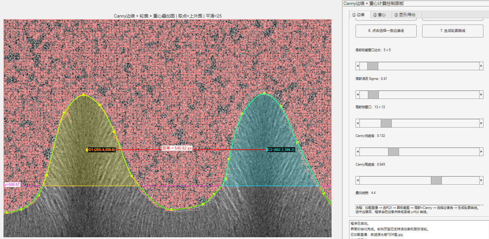
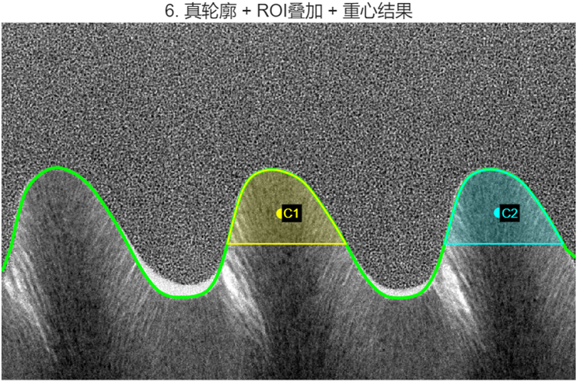

My work addresses nanoscale measurement needs in advanced integrated-circuit manufacturing. I combine optical principles, precision instrumentation, and data processing to make thin-film characterization more accurate, stable, and efficient.
Projects and Research Plans
01
RESEARCH STUDY · COMPLETE METHODOLOGY
Nanoscale Film-Thickness Measurement and Characterization
The challenge in film-thickness metrology is not only to obtain a precise number, but also to show that the result is traceable to a reliable standard and consistent across methods. Using an approximately 11 nm single-layer SiO₂ film, this project established three independent traceability routes, evaluated cross-method consistency, and combined compatible results into a reference value suitable for value transfer.
Problem
Different instruments and reference scales can produce slightly different thickness values. How can we distinguish normal measurement variation from genuine incompatibility between methods?
Approach
I used standard-calibrated ellipsometry, Si(111)-referenced TEM, and self-traceable chromium-grating-referenced TEM, and assessed metrological compatibility using the normalized error En.
Outcome
All pairwise results were compatible (En<1). Uncertainty-weighted combination yielded 11.45 ± 0.10 nm (k=2) and a framework for cross-method consistency assessment and value transfer.

Three independent routes: standard-calibrated ellipsometry, Si(111)-referenced TEM, and self-traceable-grating-referenced TEM.

Grayscale profiles and gradient extrema locate the upper and lower film interfaces before pixel width is converted into thickness.

Comparison of the three independently traceable results with the uncertainty-weighted reference value.
KEYWORDSMultiple Traceability RoutesMetrological CompatibilityUncertainty WeightingReference ValueValue Transfer
02
ALGORITHMS AND TOOLS · CODE AS THE MAIN OUTPUT
Image and Signal Processing for Optical Metrology
Using thin-film interfaces and grating structures as experimental objects, I turn manual boundary selection and one-image-at-a-time distance measurement into a reproducible computational workflow. Multiple image and signal-processing methods are combined to recover boundaries and periodic features, convert pixel distances into film thickness or grating pitch, and support transfer to other microscopy-image tasks.
01Preprocessing
An ROI is selected and corrected for specimen tilt. For low-contrast grating cross sections, the local grayscale range is used to reconstruct the response and enhance interfaces and periodic contours (Figure 1).
02Feature Extraction
Film boundaries are defined by half-intensity and gradient methods; grating boundaries are located by Gaussian filtering followed by Canny and contour extraction (Figure 2).
03Parameter Optimization
ROI extent, smoothing strength, and Canny thresholds are adjusted interactively while contour continuity and stability are checked to optimize the result.
04Feature Calculation
Pixel features are converted into physical quantities to obtain film thickness, while distances between neighboring contour centroids yield grating pitch (Figure 3).

Figure 1. Original grating cross section (left) and the result after local-range inversion (right), with enhanced contrast at material interfaces and periodic contours.

Figure 2. Grating-boundary extraction and parameter tuning, with Canny edges, selected contours, and centroid results overlaid for inspection.

Figure 3. Centroids extracted from true contours within the selected ROIs; the distance between neighboring centroids is used to calculate grating pitch.
Ellipsometric Modeling and Uncertainty Propagation
Ellipsometry recovers nanoscale material information from polarization changes produced by light-film interaction. This project models the responses of ψ and Δ to the complex refractive index n+ik, thickness d, wavelength, and incidence angle; studies how different error sources propagate, couple, and amplify during inversion; and seeks more reliable measurement conditions for instrument design and uncertainty evaluation.
Measured Quantity
ρ = rp/rs = tan ψ · eiΔ
Film Phase
β = 2πnd cos θf / λ
Error Propagation
[δψ, δΔ]T ≈ Jn,d[δn, δd]T + Jqδq
Here λ is wavelength, θf is the refracted angle inside the film, and q may include incidence angle, wavelength, substrate optical constants, and instrumental errors. The Jacobian J describes the sensitivity of ψ and Δ to each input. When the inverse problem is ill-conditioned, even small measurement noise can be strongly amplified.
STEP 1
Build the Forward Model
Calculate how ψ and Δ respond to changes in n, k, d, λ, and incidence angle.
STEP 2
Map Sensitivity
Compare analytical derivatives and numerical perturbations to identify dominant uncertainty contributors.
STEP 3
Validate and Optimize
Use Monte Carlo analysis to test linear propagation and identify robust wavelength-angle combinations.